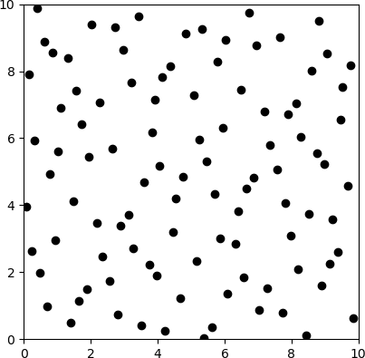
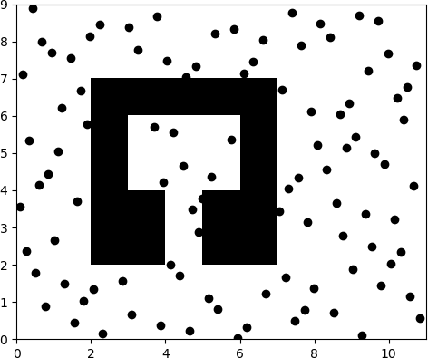
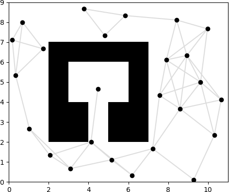
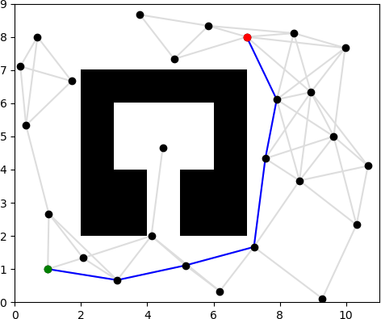
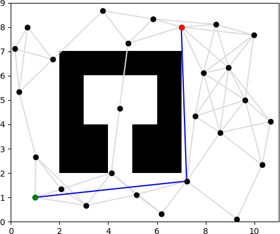
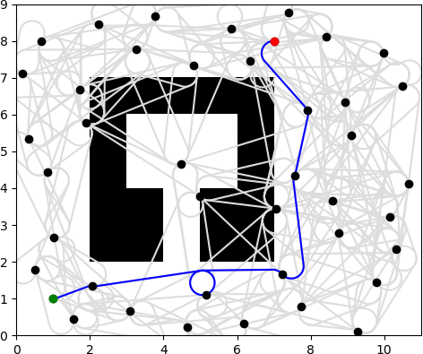
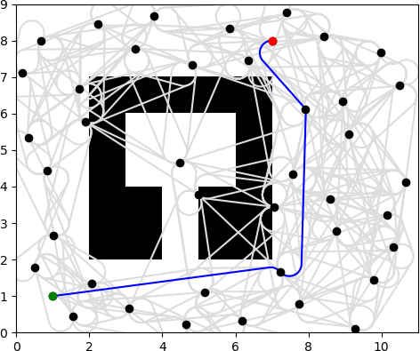
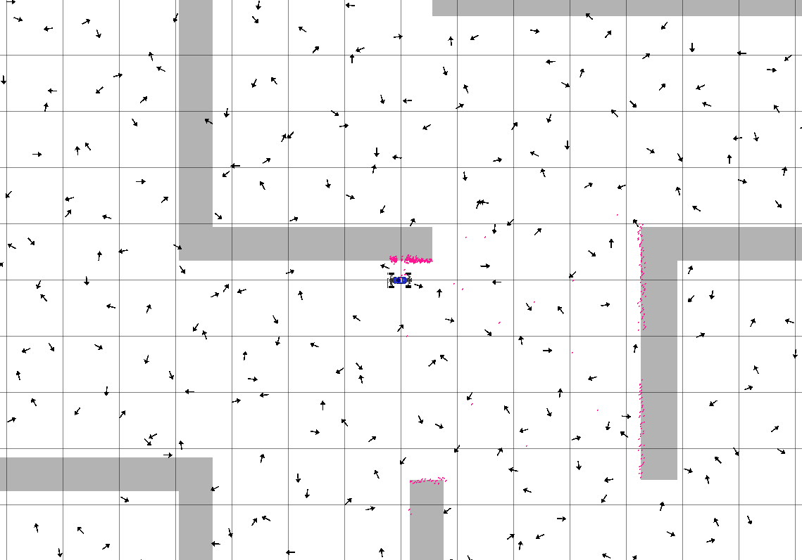
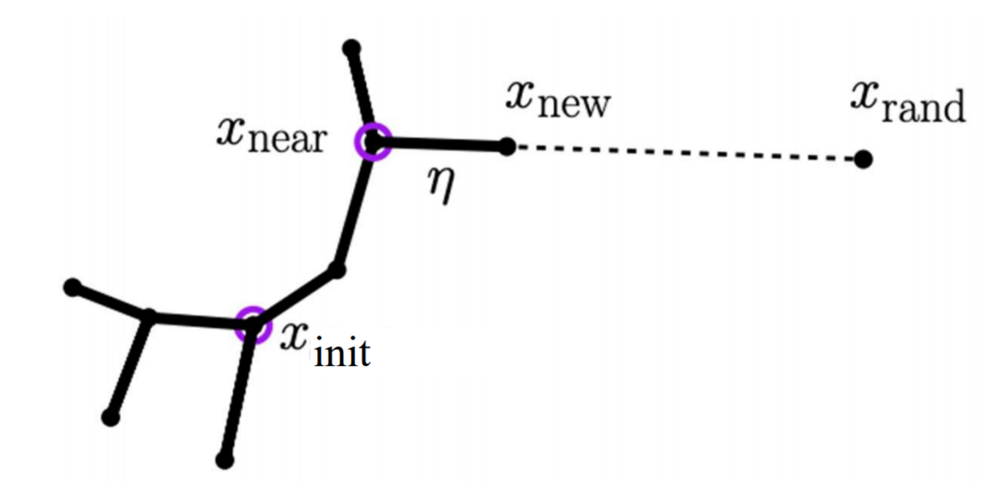
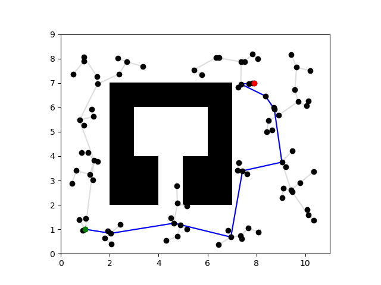

Project 4: Planning

Overview
In this project, you will implement a sampling-based motion planning system. You will construct roadmaps for different environments and planning problems. You will implement the Lazy A* algorithm to search this graph efficiently, and implement a postprocessor to locally improve the path on the graph. By the end of this project, you will have an integrated system that combines all the components you’ve previously developed in this course!
Please complete this assignment with your group from the previous assignment.
The relevant lectures are:
- Introduction to Planning
- Heuristic Search
- Sampling-Based Motion Planning
- Lazy Search, Planning for Vehicles
Getting Started
The MuSHR dependencies are the same as when Project 3 was released. To pull Project 4 from our starter repository, follow these instructions (assuming you’ve already set the upstream remote previously).
$ cd ~/mushr_ws/src/mushr478
$ git pull upstream main
$ cd ..
$ catkin build
$ source ~/mushr_ws/devel/setup.bashIf the build succeeds and you can run roscd planning, you’re ready to start! Please post on Ed if you have issues at this point.
Code Overview
The first step of motion planning is to define the problem space (src/planning/problems.py). This project only considers PlanarProblems like R2Problem and SE2Problem. The R2Problem configuration space only considers x- and y- position, while the SE2Problem also includes orientation. The PlanarProblem class implements shared functionality, such as collision-checking. The specific problems implement their own heuristic and steering function to connect two configurations. After defining these classes, the rest of your planning algorithm can abstract away these particulars of the configuration space. (To solve a new type of problem, just implement a corresponding problem class.)
The next step of sampling-based motion planning is to construct a roadmap by sampling configurations. Sampler classes include HaltonSampler, LatticeSampler, and RandomSampler (src/planning/samplers.py). You will fill in HaltonSampler to generate samples using the Halton pseudorandom sampler. Then, you will complete the Roadmap class (src/planning/roadmap.py) to finish constructing roadmaps. To search the roadmap, you will implement (Lazy) A* and path shortcutting (src/planning/search.py).
The Roadmap class contains many useful methods and fields. Three fields are of particular importance: graph, vertices, and weighted_edges. Roadmap.graph is a NetworkX graph, either undirected or directed depending on the problem type.1 The starter code already handles interacting with this object. Nodes in the NetworkX graph have integer labels. These are indices into Roadmap.vertices, a NumPy array of configurations corresponding to each node in the graph. Roadmap.weighted_edges is a NumPy array of edges and edge weights; each row (u, v, w) describes an edge where u and v are the same integer-labeled nodes and w is the length of the edge between them.
The PlannerROS class in src/control/planner_ros.py provides a ROS interface to your planning algorithms. It adds the current robot state (estimated with your particle filter from Project 2) and the desired goal to the roadmap as the start and goal nodes. Then, it invokes Lazy A* and shortcutting to compute a path. Finally, this path is sent to a path tracking controller (your MPC algorithm from Project 3).
Q1. Roadmap Construction
Q1.1: Complete the HaltonSampler class in samplers.py. The HaltonSampler maintains a separate generator (with a separate base) for each dimension of the configuration space. The compute_sample method returns a deterministic sample between 0 and 1 for a given index and base, which is later scaled by the sample method to match the extents of the configuration space. This blog post on Halton sequences might be a useful reference for implementing compute_sample.
The extents describe the lower and upper bounds of the space being sampled. Your implementation of sample should scale them linearly: a 0 returned by compute_sample corresponds to the lower bound, while a 1 corresponds to the upper bound.
After completing Q1.1, expect to pass all the test suites in python3 test/samplers.py.
You can visualize the sampled configurations with the following command. Your plot should match the reference plot below.
$ python3 scripts/roadmap --num-vertices 100 --lazy
Figure 1: Halton samples
Q1.2: Implement PlanarProblem.check_state_validity in problems.py. Remember to vectorize! This method will be used to collision-check batches of many states (states that have been sampled as potential vertices or interpolated states along an edge), so it needs to be efficient. Your implementation should ensure that configurations are within the extents of the problem space (PlanarProblem.extents), and that the x and y components are collision-free (i.e. that they lie completely within PlanarProblem.permissible_region). For simplicity, we will assume that the robot is a point, so you only need to check one entry of the permissible region for each state.
You can verify your implementation on the provided test suites by running python3 test/problems.py.
The following command will now sample until there are 100 collision-free vertices. Your plot should match the reference plot below.
$ python3 scripts/roadmap --text-map test/share/map1.txt --num-vertices 100 --lazy
Figure 2: Halton samples on map1.txt
Q1.3: Implement Roadmap.check_weighted_edges_validity in roadmap.py. This method is called by the Roadmap constructor to prevent edges in collision from being added to the graph.
You can verify your implementation on the provided test suite by running python3 test/roadmap.py.
The following command samples 25 collision-free vertices and collision-checks edges that have length less than the connection radius of 3. Your plot should match the reference plot below.
$ python3 scripts/roadmap -m test/share/map1.txt -n 25 -r 3.0 --show-edges
Figure 3: Halton graph on map1.txt with 25 vertices and connection radius of 3.
Q2. Searching the Roadmap: A*
The A* algorithm expands nodes in order of their f-value \(f(n) = g(n) + h(n)\), where \(g(n)\) is the estimated cost-to-come to the node \(n\) and \(h(n)\) is the estimated cost-to-go from the node \(n\) to the goal.
Q2.1: Implement the main A* logic in search.py. For each neighbor, compute the cost-to-come via the current node (cost-to-come for the current node, plus the length of the edge to the neighbor). Insert a QueueEntry with this information into the priority queue. Be sure to compute the f-value of the node (cost-to-come plus heuristic) so the priority queue is sorted correctly. Then, implement extract_path to follow the parent pointers from the goal to the start; this function is called by astar after the goal has been expanded to finally return the sequence of nodes.
You can verify your implementation on the provided test suites by running python3 test/astar.py. Your implementation should pass the test_astar_r2 and test_astar_se2 suites.
You should now be able to run an A* planner from the start to the goal! The following command specifies that it is an R2Problem, planning from the start of (1, 1) to the goal of (7, 8). Your plot should match the reference plot below.
$ python3 scripts/run_search -m test/share/map1.txt -n 25 -r 3.0 --show-edges r2 -s 1 1 -g 7 8
Figure 4: A* path in blue on map1.txt, from (1, 1) in green to (7, 8) in red.
Compute the shortest path on
map2.txtbetween (252, 115) and (350, 350) with the following command:python3 scripts/run_search -m test/share/map2.txt -n 600 -r 100 r2 -s 252 115 -g 350 350. Include the shortest path figure in your writeup.
Holding the number of vertices constant at 600, decrease the connection radius from 100 until the planner fails to find a solution on
map2.txt. Now, double the connection radius to 200. For each radius, report the radius, path length, and planning time. Explain any variation.
Holding the connection radius constant at 100, decrease the number of vertices from 600 until the planner fails to find a solution on
map2.txt. Now, double the number of vertices to 1200. For each number of vertices, report the number, path length, and planning time. Explain any variation.
One of the main computational bottlenecks in motion planning algorithms is checking whether an edge is collision-free. This requires checking collisions between the robot and the environment for every intermediate state along an edge. Rather than checking all edges when constructing the roadmap, Lazy A* only collision-checks an edge when attempting to choose the edge during search.
Q2.2 Implement Lazy A* in search.py. The Roadmap class decides whether to collision-check edges on construction based on Roadmap.lazy. You will use this same field to decide when edges need to be lazily evaluated by A*. When a new node is expanded, the edge from its parent to that node must be collision-checked (with Roadmap.check_edge_validity) to determine whether search can continue. If it is in collision, the entry cannot be used and is discarded. If it is collision-free, the algorithm can proceed as before.
Your implementation should pass the final test_lazy_astar test suite in test/astar.py.
You should now be able to run Lazy A*! Your plot should match the reference plot below. Note that some edges are in collision.
$ python3 scripts/run_search -m test/share/map1.txt -n 25 -r 3.0 --lazy --show-edges r2 -s 1 1 -g 7 8Figure 5: Lazy A* path in blue on map1.txt, from (1, 1) in green to (7, 8) in red.
For your choice of number of vertices and connection radius, compute the shortest path on
map2.txtwith A* and with Lazy A*. Report the path length, planning time, and edges evaluated, and explain any variation.python3 scripts/run_search -m test/share/map2.txt -n <N> -r <R> [--lazy] r2 -s 252 115 -g 350 350.
Q2.3 Implement path shortcutting in search.py. A* returns the shortest path on the graph, which is not necessarily the shortest path in the environment because not all vertices are directly connected by edges. Randomly select two indices to try and connect. Be sure to verify that an edge connecting the two vertices would be collision-free, and that connecting the two indices would actually be shorter.
You can verify your implementation on the provided test suite by running python3 test/shortcut.py.
Your plot for the following command may not match the reference plot exactly. Note that the shortcut uses edges that did not exist in the graph.
$ python3 scripts/run_search -m test/share/map1.txt -n 25 -r 3.0 --lazy --shortcut --show-edges r2 -s 1 1 -g 7 8
Figure 6: Lazy A* path with shortcut postprocessing on map1.txt.
Compare the time spent on planning and shortcutting on
map1.txt. Describe qualitatively how the paths differ.
Q3. MuSHR Planning
So far, we’ve been solving R2Problems. But since the MuSHR cars have an orientation, the problems we need to solve are SE2Problems. The Dubins path connects two configurations, with a maximum specified curvature2. Since the Dubins path is directed, the graph will be directed. As a result, more vertices are generally needed for the graph to be connected.
Your plot should match the reference plot below. Note that some edges are in collision.
$ python3 scripts/run_search -m test/share/map1.txt -n 40 -r 4 --lazy --show-edges se2 -s 1 1 0 -g 7 8 45 -c 3
Figure 7: Lazy A* path in blue on map1.txt, from (1, 1, 0°) to (7, 8, 45°).
Shortcutting should reduce the path length further.
$ python3 scripts/run_search -m test/share/map1.txt -n 40 -r 4 --lazy --shortcut --show-edges se2 -s 1 1 0 -g 7 8 45 -c 3
Figure 8: Lazy A* path with shortcut postprocessing on map1.txt.
Holding the number of vertices and connection radius constant, vary the curvature from its initial value of 3 to 4.5, 9, and 15. Include plots of the computed paths for each curvature on
map1.txt. Describe qualitatively how the paths differ, and quantitatively compare the path lengths.python3 scripts/run_search -m test/share/map1.txt -n 40 -r 4 --lazy --show-edges se2 -s 1 1 0 -g 7 8 45 -c <C>
Q4. Putting It All Together
First, we’ll need to create roadmaps for our test environments. The default parameters in the launch files create a roadmap with 200 vertices, a connection radius of 10 meters, and a curvature of 1 meter-1.
planner_sim.launch will start your particle filter, controller, planner (including roadmap generation), and RViz. The roadmap’s vertices will be rendered in RViz as scattered arrows. Edges take longer to visualize, but will eventually appear as curves between them. You will not be able to plan until the roadmap has been generated (i.e., until the vertices appear in RViz). Creating a roadmap for the maze_0 map with the following parameters takes about 20 seconds.
$ roslaunch planning planner_sim.launch map:='$(find cse478)/maps/maze_0.yaml' num_vertices:=1000 connection_radius:=10 curvature:=1To start planning to a new goal, use the “2D Nav Goal” tool in the RViz toolbar. Similar to the “2D Pose Estimate” tool, click on the position you want to specify and drag in the desired direction. Once the plan is generated, you should see the path visualized as you did for the pre-programmed paths in Project 3. The planner and controller use the particle filter estimate as the robot’s current state to plan/control from.
Your planner may sometimes fail to find a path. That may be expected if there aren’t enough vertices in the graph along the shortest path. In that case, just set a new goal (or set nearby goals, which can be connected directly to the start).

Figure 9: RViz window for maze_0.
Include an RViz screenshot of the MuSHR car tracking a path in
maze_0, as well as the parameters you used to construct the roadmap.
Simulated Driving in the Gates Center
As with maze_0, our machines take about 20 seconds to construct a roadmap for cse2_2. Your MuSHR car should be able to plan to faraway configurations in this much larger map.
$ roslaunch planning planner_sim.launch map:='$(find cse478)/maps/cse2_2.yaml' num_vertices:=1500 connection_radius:=10 curvature:=1 initial_x:=16 initial_y:=28You may want to continue to tune the roadmap parameters (number of vertices, connection radius, and curvature) beyond our initial suggestions here. You may also want to retune your MPC controller or particle filter.
Caching Roadmaps
For roadmaps that take more time to generate, make_roadmap.launch avoids starting all the other components of your MuSHR system. The constructed roadmap is cached, so you can run planner_sim.launch afterwards without having to wait (with the cache_roadmap flag set to true).
$ roslaunch planning make_roadmap.launch map:='$(find cse478)/maps/cse2_2.yaml' num_vertices:=5000 connection_radius:=10 curvature:=1 initial_x:=16 initial_y:=28
$ roslaunch planning planner_sim.launch map:='$(find cse478)/maps/cse2_2.yaml' num_vertices:=5000 connection_radius:=10 curvature:=1 initial_x:=16 initial_y:=28 cache_roadmap:=trueThese roadmaps are cached under ~/.ros/graph_cache with: the name of the map, the type of problem (r2 or se2), the name of the sampler, the number of vertices, the connection radius, and the curvature (if applicable). If you want to regenerate that roadmap, just delete the corresponding file.
Include an RViz screenshot of the MuSHR car tracking a path in
cse2_2, as well as the parameters you used to construct the roadmap.
Running on the car and Demo
First, pull the starter repo to make sure your repo is up-to-date.
In the MuSHR Lab, place your MuSHR car in the open space. Start teleop, then in another terminal run the following command to specify the map.
$ rosrun map_server map_server $(rospack find cse478)/maps/cse022.yamlIn yet another terminal, start the particle filter with the following command.
$ roslaunch localization particle_filter_sim.launch use_namespace:=true publish_tf:=true tf_prefix:="car/"Run a controller (PID/MPC), e.g., PID in another terminal.
$ roslaunch control controller.launch type:=pid tf_prefix:="car/"Run planning in another terminal.
$ roslaunch planning planner_car.launch num_vertices:=1000 connection_radius:=20 curvature:=1Wait for the roadmap construction to finish.
Launch Rviz. Add the following topics:
- The /map Map topic
- The /pf/inferred_pose Pose topic
- The /scan LaserScan topic
- The /pf/particles PoseArray topic
- The /car/controller/path/poses PoseArray topic. Set the color to blue.
- The /car/controller/real_path/poses PoseArray topic. Set the color to green.
- The /car/planner/edges Marker topic.
- The /car/planner/vertices PoseArray topic.
Press and hold the R1 bumper of the controller to put the car in autonomous mode. After setting the above topics in Rviz, set the initial pose using the 2d Pose Estimate button. Similarly, use the 2d Nav Goal button to set the goal pose on the map. The car will start moving towards the destination as soon as the path planning is finished.
Q5. Extra Credit: Rapidly Exploring Random Tree (RRT)
The RRT algorithm builds a tree, randomly samples nodes, and expands the tree towards these until it reaches the goal.
Q5.1: Implement the RRT logic in rrt.py. Initialize the tree RRTTree with your starting node (\(x_{init}\)). Draw a random sample (\(x_{rand}\)) and get the nearest neighbor in you tree (\(x_{near}\)). Expand the tree towards the new sample with step size \(\eta\) and validate both the new node (\(x_{new}\)) and edge. If valid, add both to your tree. Keep expanding the tree and discarding invalid expansions for \(max\_iter\) or until the goal criteria is met. You might find the following functions useful: sample, extend, rm.problem.check_state_validity, rm.problem.check_edge_validity, rm.problem.goal_criterion, tree.AddVertex, tree.AddEdge, tree.GetNearestVertex. Note that plain RRT does not have a notion of cost and you can set \(cost=0\). Our code computes the cost after the search terminates.

Figure 10: RRT expansion
You can verify your implementation on the provided test suites by running python3 test/rrt.py. Your implementation should pass the test_rrt_r2 and test_rrt_se2 suites.
You should now be able to run an RRT planner from the start to the goal! The following command specifies that it is an R2Problem, planning from the start of (1, 1) to the goal of (8, 7). Due to the stochastic nature of the RRT sampling, your plot might look slighlty different from the reference plot below depending on your implementation.
$ python3 scripts/run_search -m test/share/map1.txt --algorithm rrt -x 1000 -e 0.5 -b 0.05 --show-edges r2 -s 1 1 -g 8 7
Figure 4: RRT path in blue on map1.txt, from (1, 1) in green to (8,7) in red.
Compute the path for the
SEProblemonmap1.txtbetween (1, 1, 0°) and (7, 8, 45°) with curvature 3 with the following command:python3 scripts/run_search -m test/share/map1.txt --algorithm rrt -x 1000 -e 0.5 -b 0.05 --show-edges se2 -s 1 1 0 -g 7 8 45 -c 3. Include the figure in your writeup.
Q5.2: Parameter \(\eta\) defines how far the tree expands to the sampled nodes. Additionally, the goal node can be sampled with probability \(bias\). For this exercise we start with \(\eta=0.5\) and \(bias=0.05\). Try running RRT for different parameter values and provide an intuition on how those parameters affect the convergence and the solution. If no solution is found, the algorithm returns an empty array. Try to increase \(max\_iter\) and be more conservative when tuning the parameters.
Deliverables
Answer the following writeup questions in planning/writeup/README.md. All figures should be saved in the planning/writeup directory.
Include the A* shortest path figure on
map2.txtbetween (252, 115) and (350, 350), with 600 vertices and a connection radius of 100.Holding the number of vertices constant at 600, vary the connection radius when computing the shortest path on
map2.txt. For each experiment, report the radius, path length, and planning time. Explain any variation. (You may find a table useful for summarizing your findings.)Holding the connection radius constant at 100, vary the number of vertices when computing the shortest path on
map2.txt. For each experiment, report the number of vertices, path length, and planning time. Explain any variation. (You may find a table useful for summarizing your findings.)Use the previous experiments to choose a number of vertices and connection radius for
map2.txt. Compute the shortest path with A* and Lazy A*. Report the path length, planning time, and edges evaluated. Explain any variation.Compare the time spent on planning and shortcutting on
map1.txt. Describe qualitatively how the paths differ.Holding the number of vertices and connection radius constant at 40 and 4 respectively, vary the curvature at 3, 4.5, 9, and 15 when computing the shortest path on
map1.txt. Include plots of the computed paths for each curvature. Describe qualitatively how the paths differ, and quantitatively compare the path lengths.The minimum and maximum steering angles used by MPC are -0.34 and 0.34 radians respectively. Knowing that the distance between the axles is 0.33 meters, what is the maximum curvature for the MuSHR car? (Hint: think about the kinematic car model.)
Include an RViz screenshot of the MuSHR car tracking a path in
maze_0, as well as the parameters you used to construct the roadmap.Include an RViz screenshot of the MuSHR car tracking a path in
cse2_2, as well as the parameters you used to construct the roadmap.If you retuned either the particle filter or MPC, describe why you thought it was necessary and how you chose the new parameters.
Demo: Run the planner with a controller of your choice and particle filter in real.
Submission
As with previous projects, you will use Git to submit your project (code and writeup).
From your mushr478 directory, add all of the writeup files and changed code files. Commit those changes, then create a Git tag called submit-proj4. Pushing the tag is how we’ll know when your project is ready for grading.
$ cd ~/mushr_ws/src/mushr478/
$ git diff # See all your changes
$ git add . # Add all the changed files
$ git commit -m 'Finished Project 4!' # Or write a more descriptive commit message
$ git push # Push changes to your GitLab repository
$ git tag submit-proj4 # Create a tag named submit-proj4
$ git push --tags # Push the submit-proj4 tag to GitLab